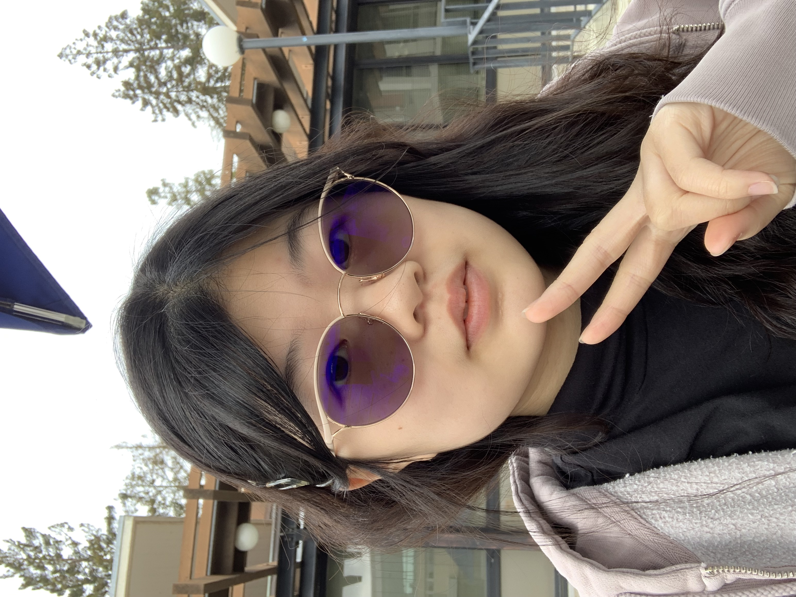

Computer Science and Data Science Major | 3rd Year
Hello! I'm Jasmine Lin. My main interests are in all things related to programming coupled with
design/UI/UX. I also really love teaching and am part of the teaching community here at UC Berkeley.
Outisde of my interests, one of my favorite food combos that I always like to try is garlic noodles with
a side of thai milk tea.
Some of my favorite places to eat:
- Toss Noddle Bar
- Angeline's Louisiana Kitchen
- Gadani

Click this link!
Here's my favorite website though.
Homework 1 Reading Questions
- Just from reading this article, the author introduced specific design choices made on popular apps, choices that I might not have necessarily seen
from first glance if I were using the apps regularly. For example, on Twitter, the author pointed out how when composing a tweet, the wording is specifically
"Add a Tweet", not "Add another Tweet." Every choice, it seems, is made with a specific design choice in mind to best cater towards
users of the app.
-
The article breaks down the components of what you want to look for when you looking an app pretty clearly. It guides the reader on what to focus on and keep
in mind when looking at the apps, as well as what questions you want to ask yourself in relation to why a design choice was made.
- "You develop your design eye by thinking as if you were the designer of a product."
- A Solid 8/10.